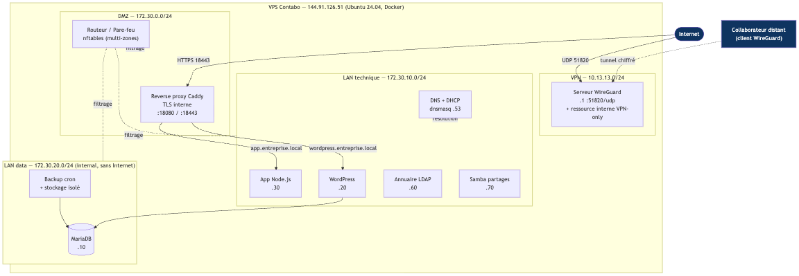
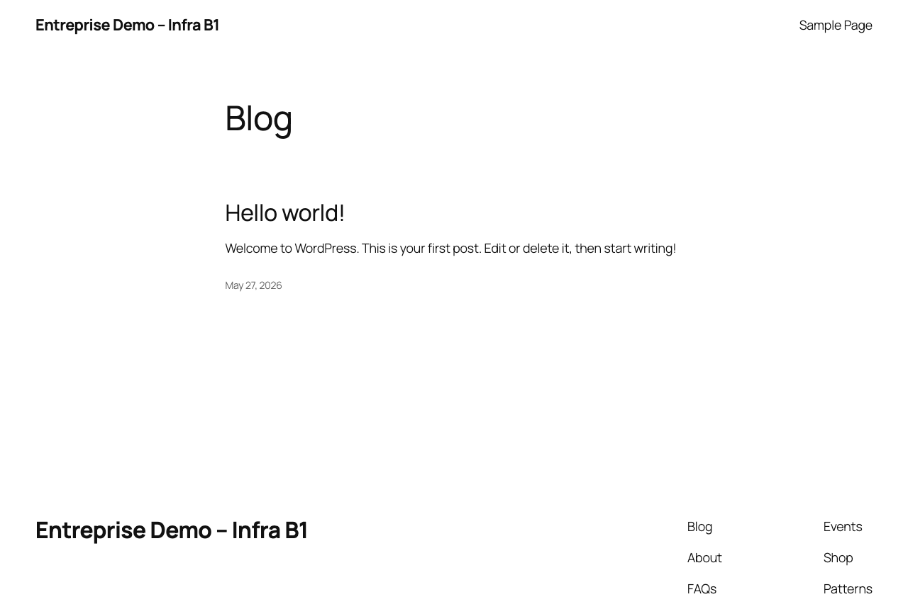

Hugo BERTON · Shakil KHALDI · Mathéo AMOUROUX — Groupe 3
Oral final — 29 mai 2026
Siège social d'une entreprise en croissance — l'équipe doit :

| Zone | Sous-réseau | Hôtes | Particularité |
|---|---|---|---|
| DMZ | 172.30.0.0/24 | Reverse proxy · Routeur/pare-feu | Exposition contrôlée |
| LAN technique | 172.30.10.0/24 | WordPress .20 · Node .30 · DNS .53 · LDAP .60 · Samba .70 | Serveurs applicatifs |
| LAN data | 172.30.20.0/24 | MariaDB .10 · Backup | internal — sans Internet sortant |
| VPN | 10.13.13.0/24 | WireGuard .1 · hugo .2 · shakil .3 · matheo .4 | Tunnel chiffré 51820/udp |
Ports publics : 18080/tcp · 18443/tcp (web) · 51820/udp (VPN). Tout le reste est interne.
entreprise.local)forward = dropdocker logs infra-router-fw → interfaces, règles, tests de joignabilité inter-zones (OK).
https://wordpress.entreprise.local:18443
https://app.entreprise.local:18443
Certificats émis par la CA Caddy locale ; en prod : Let's Encrypt avec un vrai domaine.

*/30 * * * *)mysqldump de la base WordPresstar.gz des fichiers du sitebackup_storage/restore.sh /backups/db_<TS>.sql.gz
Dernier dump : 18,9 Ko (SQL) + 25,9 Mo (fichiers).
51820/udpwhoami lié à 10.13.13.1:80dc=entreprise,dc=localpeople · groups| Compétence | Pond. | Comment c'est couvert |
|---|---|---|
| Mise en œuvre d'un réseau simple | 4 | 3 sous-réseaux, plan d'adressage, DNS/DHCP, routage |
| Infrastructure client-serveur | 4 | Reverse proxy + 2 apps + DB + clients (web, VPN, Samba) |
| Administration d'un système | 4 | Docker/Linux, services persistants, scripts Bash backup/firewall |
| Virtualisation & maquette | 3 | Stack Docker Compose fidèle au besoin client |
| Sécurisation (pare-feu, segmentation, VPN) | 3 | nftables, TLS, VPN, exposition minimale, zone data isolée |
| Documentation technique | 3 | Doc + READMEs + support oral + dépôt Git public |
Questions ?
Dépôt : github.com/H129hj/infra-entreprise-b1
Hugo BERTON · Shakil KHALDI · Mathéo AMOUROUX